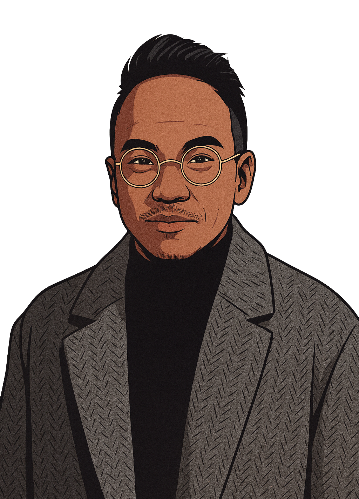

<!DOCTYPE html>
<html lang="en">
<head>
<meta charset="UTF-8" />
<meta name="viewport" content="width=device-width, initial-scale=1.0" />
<title>// resume — gabriel barrera</title>
<link rel="preconnect" href="https://fonts.googleapis.com" />
<link rel="preconnect" href="https://fonts.gstatic.com" crossorigin />
<link href="https://fonts.googleapis.com/css2?family=JetBrains+Mono:wght@300;400;500;700&family=IBM+Plex+Mono:ital,wght@0,400;0,500;1,400&family=IBM+Plex+Sans:wght@400;500&family=Space+Grotesk:wght@500;600;700&display=swap" rel="stylesheet" />
<link rel="stylesheet" href="../styles.css" />
<style>
/* ── Resume-specific styles ───────────────────────────── */
.resume-page main {
  padding-bottom: 80px;
}

.resume-hero {
  padding: 60px 0 48px;
  border-bottom: 1px solid var(--line);
}
.resume-crumbs {
  font-size: 12px;
  color: var(--dim);
  letter-spacing: 0.04em;
  margin-bottom: 32px;
  display: flex;
  align-items: center;
  gap: 8px;
}
.resume-crumbs a { color: var(--acc-2); }
.resume-crumbs a:hover { color: var(--acc); }
.resume-crumbs .sep { color: var(--dimmer); }
.resume-crumbs .here { color: var(--dim); }

.resume-name {
  font-family: 'Space Grotesk', sans-serif;
  font-weight: 700;
  font-size: clamp(48px, 7vw, 96px);
  line-height: 0.92;
  letter-spacing: -0.04em;
  margin: 0 0 16px;
  text-transform: uppercase;
}
.resume-title-line {
  font-size: 14px;
  color: var(--acc-2);
  letter-spacing: 0.08em;
  text-transform: uppercase;
  margin-bottom: 20px;
}
.resume-title-line span { color: var(--acc); margin-right: 8px; }
.resume-summary {
  font-family: 'IBM Plex Sans', system-ui, sans-serif;
  font-size: 15px;
  line-height: 1.7;
  color: var(--ink);
  opacity: 0.78;
  max-width: 64ch;
  margin: 0;
}

/* ── Resume body grid ─────────────────────────────────── */
.resume-body {
  display: grid;
  grid-template-columns: 1fr 2.2fr;
  gap: 0 64px;
  padding-top: 56px;
}

/* ── Section headings ─────────────────────────────────── */
.res-section {
  margin-bottom: 48px;
}
.res-section-head {
  display: flex;
  align-items: center;
  gap: 12px;
  font-size: 10px;
  letter-spacing: 0.16em;
  text-transform: uppercase;
  color: var(--dim);
  margin-bottom: 20px;
  padding-bottom: 8px;
  border-bottom: 1px solid var(--line);
}
.res-section-head .acc { color: var(--acc); font-weight: 700; text-shadow: 0 0 6px var(--acc); }

/* ── Skill groups ─────────────────────────────────────── */
.skill-group {
  margin-bottom: 18px;
}
.skill-group-label {
  font-size: 10px;
  letter-spacing: 0.12em;
  text-transform: uppercase;
  color: var(--acc-2);
  margin-bottom: 8px;
}
.skill-chips {
  display: flex;
  flex-wrap: wrap;
  gap: 6px;
}
.skill-chip {
  font-size: 11px;
  letter-spacing: 0.03em;
  padding: 4px 9px;
  border: 1px solid var(--line);
  color: var(--dim);
  background: oklch(0.10 0.02 280 / 0.5);
  transition: all 0.15s;
}
.skill-chip:hover {
  border-color: var(--acc);
  color: var(--acc);
  text-shadow: 0 0 6px var(--acc);
}

/* ── Soft skills grid ─────────────────────────────────── */
.soft-chips {
  display: flex;
  flex-wrap: wrap;
  gap: 6px;
}

/* ── Education entry ──────────────────────────────────── */
.edu-entry {
  margin-bottom: 24px;
}
.edu-degree {
  font-weight: 700;
  font-size: 13px;
  color: var(--ink);
  margin-bottom: 4px;
}
.edu-school {
  font-size: 12px;
  color: var(--acc-2);
  margin-bottom: 2px;
}
.edu-dates {
  font-size: 11px;
  color: var(--dimmer);
  margin-bottom: 10px;
}
.edu-courses-label {
  font-size: 10px;
  letter-spacing: 0.1em;
  text-transform: uppercase;
  color: var(--dim);
  margin-bottom: 6px;
}
.edu-courses {
  display: flex;
  flex-wrap: wrap;
  gap: 5px;
}

/* ── Experience entries ───────────────────────────────── */
.exp-entry {
  margin-bottom: 48px;
  padding-bottom: 40px;
  border-bottom: 1px dashed var(--line);
}
.exp-entry:last-child {
  border-bottom: none;
}
.exp-header {
  display: flex;
  justify-content: space-between;
  align-items: flex-start;
  gap: 16px;
  margin-bottom: 4px;
  flex-wrap: wrap;
}
.exp-role {
  font-weight: 700;
  font-size: 15px;
  color: var(--ink);
}
.exp-role .arrow { color: var(--acc); margin: 0 6px; }
.exp-company {
  font-size: 12px;
  color: var(--acc-2);
  margin-bottom: 4px;
}
.exp-dates {
  font-size: 11px;
  color: var(--dimmer);
  white-space: nowrap;
  flex-shrink: 0;
}
.exp-bullets {
  list-style: none;
  padding: 0;
  margin: 14px 0 0;
  display: flex;
  flex-direction: column;
  gap: 10px;
}
.exp-bullets li {
  display: flex;
  gap: 10px;
  font-family: 'IBM Plex Sans', system-ui, sans-serif;
  font-size: 14px;
  line-height: 1.65;
  color: var(--ink);
  opacity: 0.82;
}
.exp-bullets li::before {
  content: '▸';
  color: var(--acc);
  flex-shrink: 0;
  margin-top: 1px;
}

/* ── Project entries ──────────────────────────────────── */
.proj-entry {
  margin-bottom: 28px;
  padding: 18px 20px;
  border: 1px solid var(--line);
  background: oklch(0.08 0.02 280 / 0.4);
  position: relative;
}
.proj-entry::before {
  content: '';
  position: absolute;
  inset: 0 auto 0 0;
  width: 2px;
  background: linear-gradient(to bottom, var(--acc), var(--acc-2));
}
.proj-name {
  font-weight: 700;
  font-size: 13px;
  color: var(--acc);
  text-shadow: 0 0 6px oklch(0.72 0.28 var(--hue-a) / 0.4);
  margin-bottom: 8px;
  letter-spacing: 0.04em;
}
.proj-desc {
  font-family: 'IBM Plex Sans', system-ui, sans-serif;
  font-size: 13px;
  line-height: 1.65;
  color: var(--ink);
  opacity: 0.78;
  display: flex;
  gap: 8px;
}
.proj-desc::before {
  content: '▸';
  color: var(--acc-2);
  flex-shrink: 0;
}

/* ── Terminal decoration ──────────────────────────────── */
.term-bar {
  display: flex;
  align-items: center;
  gap: 8px;
  padding: 8px 14px;
  background: oklch(0.06 0.02 280 / 0.8);
  border: 1px solid var(--line);
  border-bottom: none;
  font-size: 11px;
  color: var(--dimmer);
}
.term-dots { display: flex; gap: 5px; }
.term-dot { width: 8px; height: 8px; border-radius: 50%; }
.term-dot.r { background: oklch(0.6 0.2 30); }
.term-dot.y { background: oklch(0.75 0.18 75); }
.term-dot.g { background: oklch(0.7 0.2 145); }
.term-path { color: var(--acc-2); margin-left: 8px; }

.resume-ascii {
  font-size: 11px;
  line-height: 1.45;
  color: oklch(0.55 0.12 var(--hue-b));
  padding: 16px 20px;
  background: oklch(0.06 0.02 280 / 0.7);
  border: 1px solid var(--line);
  border-top: none;
  white-space: pre;
  overflow-x: auto;
  margin-bottom: 40px;
}

/* ── Responsive ───────────────────────────────────────── */
@media (max-width: 880px) {
  .resume-body {
    grid-template-columns: 1fr;
    padding-top: 40px;
  }
}
</style>
</head>
<body>
<div id="root"></div>

<script crossorigin src="https://unpkg.com/react@18.3.1/umd/react.production.min.js"></script>
<script crossorigin src="https://unpkg.com/react-dom@18.3.1/umd/react-dom.production.min.js"></script>
<script src="https://unpkg.com/@babel/standalone@7.29.0/babel.min.js"></script>

<script type="text/babel" data-presets="react">
const { useState, useEffect, useRef } = React;

function MatrixRain({ enabled, hue }) {
  const ref = useRef(null);
  useEffect(() => {
    if (!enabled) return;
    const canvas = ref.current;
    if (!canvas) return;
    const ctx = canvas.getContext('2d');
    let raf, cols, drops, fontSize;
    const resize = () => {
      const dpr = window.devicePixelRatio || 1;
      canvas.width = canvas.offsetWidth * dpr;
      canvas.height = canvas.offsetHeight * dpr;
      ctx.setTransform(1, 0, 0, 1, 0, 0);
      ctx.scale(dpr, dpr);
      fontSize = 14;
      cols = Math.floor(canvas.offsetWidth / fontSize);
      drops = Array(cols).fill(0).map(() => Math.random() * -100);
    };
    resize();
    window.addEventListener('resize', resize);
    const glyphs = 'アァカサタナハマヤャラワガザダバパイィキシチニヒミリギジヂビピウゥクスツヌフムユュルグズブヅプエェケセテネヘメレゲゼデベペオォコソトノホモヨョロヲゴゾドボポ0123456789ABCDEF{}<>[]/$#@!?*';
    const draw = () => {
      ctx.fillStyle = 'rgba(6, 4, 12, 0.08)';
      ctx.fillRect(0, 0, canvas.offsetWidth, canvas.offsetHeight);
      ctx.font = `${fontSize}px "JetBrains Mono", monospace`;
      for (let i = 0; i < cols; i++) {
        const ch = glyphs[Math.floor(Math.random() * glyphs.length)];
        const x = i * fontSize;
        const y = drops[i] * fontSize;
        ctx.fillStyle = `oklch(0.92 0.18 ${hue})`;
        ctx.fillText(ch, x, y);
        ctx.fillStyle = `oklch(0.6 0.2 ${hue} / 0.6)`;
        ctx.fillText(ch, x, y - fontSize);
        if (y > canvas.offsetHeight && Math.random() > 0.975) drops[i] = 0;
        drops[i] += 0.4;
      }
      raf = requestAnimationFrame(draw);
    };
    draw();
    return () => {
      cancelAnimationFrame(raf);
      window.removeEventListener('resize', resize);
    };
  }, [enabled, hue]);
  if (!enabled) return null;
  return <canvas ref={ref} className="matrix-rain" />;
}

function GlitchText({ text, className = '' }) {
  return <span className={`glitch-text ${className}`} data-text={text}>{text}</span>;
}

function Topbar() {
  const [open, setOpen] = useState(false);
  const close = () => setOpen(false);
  return (
    <header className="topbar">
      <div className="topbar-l">
        <a href="../index.html" style={{display:'flex',alignItems:'center',gap:10}}>
          <span className="logo-mark">◆</span>
          <span className="logo-txt">gabriel.barrera<span className="caret">_</span></span>
        </a>
      </div>
      <nav className={`topbar-nav${open ? ' open' : ''}`}>
        <a href="hacker.html" onClick={close}>/01.hacker</a>
        <a href="poet.html" onClick={close}>/02.poet</a>
        <a href="gamer.html" onClick={close}>/03.gamer</a>
        <a href="../index.html#contact" onClick={close}>/04.contact</a>
      </nav>
      <div className="topbar-mobile-r">
        
        <button className={`hamburger${open ? ' open' : ''}`} onClick={() => setOpen(o => !o)} aria-label="Toggle menu">
          <span /><span /><span />
        </button>
      </div>
    </header>
  );
}

const SKILLS = {
  Languages:      ['PowerShell', 'Python', 'JavaScript', 'PHP', 'KQL', 'SQL', 'Bash'],
  'Cloud Services': ['Microsoft Azure', 'Intune', 'O365', 'SolarWinds', 'Okta', 'Twilio'],
  Tools: ['MS Defender XDR', 'Palo Alto', 'Power Automate', 'Power BI', 'Postman', 'Git', 'InfoBlox', 'Any.Run', 'VT', 'Rapid7', 'Ghidra'],
};

const SOFT_SKILLS = [
  'Verbal/Written Communication', 'Critical Thinking', 'Teamwork',
  'Problem Solving', 'Adaptability', 'Self-Management', 'Design', 'Questioning',
];

const PROJECTS = [
  {
    name: 'The Hunt',
    desc: 'Implemented detection alerts, learned to read/write Russian, and investigated the chain of command to determine the legitimacy of a highly suspicious user.',
  },
  {
    name: 'The Sentinel Unified System (SUS)',
    desc: 'Integrated SolarWinds Service Desk, custom KQLs and Analytics Rules, Teams, and Logic Apps for a more efficient and robust security event detection and lifecycle management.',
  },
];

const EXPERIENCE = [
  {
    role: ['Information Security Analyst', 'IS Analyst II'],
    company: 'Port of San Diego',
    dates: 'Nov 2019 – Present',
    bullets: [
      'Reduced MTTD by ~70% and MTTR by ~30% by building a centralized event collection and alerting system in Azure, bridging the gap until a formal SIEM was procured and implemented.',
      'Monitored security alerts and SIEM dashboards (Azure Sentinel, FireEye Helix) for suspicious activity; performed daily reviews of Palo Alto firewall and IDS/IPS logs; investigated and documented incidents involving phishing, malware, and unauthorized access.',
      'Led threat hunting operations using Defender XDR, Azure Sentinel, Palo Alto traffic analysis, and InfoBlox queries to identify, contain, and remediate confirmed or suspected compromises within defined SLAs.',
      'Hardened identity security by implementing Okta MFA, configuring Certificate-Based Authentication policies, managing user provisioning and deprovisioning across Active Directory and Azure Entra, and auditing IAM against CIS benchmarks.',
      'Automated detection and response workflows via Logic Apps, App Registrations, and PowerShell scripts leveraging the Graph API, reducing time-to-audit and addressing operational inefficiencies.',
      'Performed risk assessments of vulnerabilities surfaced by Defender and Rapid7, ensured timely patching and remediation, and reviewed SOC 2 / ISO 27001 reports from third-party vendors.',
      'Developed KQL detection rules in Defender and Sentinel based on emerging threat research, critical CVEs, and new IOCs; analyzed suspicious executables using Ghidra and ClamAV.',
      'Managed endpoint security monitoring across antivirus and EDR solutions; collaborated with sysadmin and network teams to enforce security controls and kept security policies and documentation current.',
      'Drove security awareness through phishing simulations, targeted email alerts, and quarterly interactive training campaigns.',
    ],
  },
  {
    role: ['Software Developer Intern'],
    company: 'Port of San Diego',
    dates: 'Jan 2018 – Nov 2019',
    bullets: [
      'Aided recovery efforts of the Port of San Diego\'s Incident Response Team following a company-wide ransomware attack, collaborating across departments, validating recovery checkpoints, and verifying rebuilt systems met security and compliance baselines before reintegration.',
      'Developed and maintained PowerShell and Python scripts to automate deployment and incident response tasks, improving team efficiency and reducing workload against SLA targets.',
      'Contributed to full-stack features and bug fixes spanning UI/UX, back-end logic, and API integrations; conducted unit and integration testing to validate functionality and reliability.',
      'Participated in daily stand-ups, sprint planning, and code reviews; applied Git/GitHub version control best practices and maintained documentation for code changes and technical processes.',
    ],
  },
];

function SectionHead({ num, label, path }) {
  return (
    <div className="res-section-head">
      <span className="acc">{num}</span>
      <span className="pillar-bar" />
      <span style={{color:'var(--acc-2)'}}>{path || label}</span>
    </div>
  );
}

function Sidebar() {
  return (
    <div className="resume-sidebar">

      <div className="res-section">
        <SectionHead num="A" label="education" path="/edu" />
        <div className="edu-entry">
          <div className="edu-degree">Bachelors Science — Computer Science</div>
          <div className="edu-school">San Diego State University</div>
          <div className="edu-dates">2015 – 2019</div>
          <div className="edu-courses-label">Relevant Courses</div>
          <div className="edu-courses">
            {['Cyber Security', 'Machine Learning', 'Systems Programming', 'Data Structures'].map(c => (
              <span key={c} className="skill-chip">{c}</span>
            ))}
          </div>
        </div>
      </div>

      <div className="res-section">
        <SectionHead num="B" label="technical skills" path="/skills" />
        {Object.entries(SKILLS).map(([group, items]) => (
          <div key={group} className="skill-group">
            <div className="skill-group-label">{group}</div>
            <div className="skill-chips">
              {items.map(s => <span key={s} className="skill-chip">{s}</span>)}
            </div>
          </div>
        ))}
      </div>

      <div className="res-section">
        <SectionHead num="C" label="soft skills" path="/soft" />
        <div className="soft-chips">
          {SOFT_SKILLS.map(s => <span key={s} className="skill-chip">{s}</span>)}
        </div>
      </div>

    </div>
  );
}

function MainContent() {
  return (
    <div className="resume-main">

      <div className="res-section">
        <SectionHead num="01" label="experience" path="/dev/experience" />
        {EXPERIENCE.map((job, idx) => (
          <div key={idx} className="exp-entry">
            <div className="exp-header">
              <div>
                <div className="exp-role">
                  {job.role.map((r, i) => (
                    <span key={r}>
                      {i > 0 && <span className="arrow">→</span>}
                      {r}
                    </span>
                  ))}
                </div>
                <div className="exp-company">{job.company}</div>
              </div>
              <div className="exp-dates">{job.dates}</div>
            </div>
            <ul className="exp-bullets">
              {job.bullets.map((b, i) => <li key={i}>{b}</li>)}
            </ul>
          </div>
        ))}
      </div>

      <div className="res-section">
        <SectionHead num="02" label="notable projects" path="/dev/projects" />
        {PROJECTS.map((p, idx) => (
          <div key={idx} className="proj-entry">
            <div className="proj-name">{'> '}{p.name}</div>
            <div className="proj-desc">{p.desc}</div>
          </div>
        ))}
      </div>

    </div>
  );
}

function App() {
  const styleVars = { '--hue-a': 320, '--hue-b': 200 };
  return (
    <div className="page has-scan has-flicker resume-page" style={styleVars}>
      <MatrixRain enabled={true} hue={320} />
      <Topbar />
      <main>
        <section className="resume-hero">
          <div className="resume-crumbs">
            <a href="../index.html">~</a>
            <span className="sep">/</span>
            <a href="../index.html#hacker">hacker</a>
            <span className="sep">/</span>
            <span className="here">resume</span>
          </div>
          <h1 className="resume-name">
            <GlitchText text="Gabriel" />{' '}
            <GlitchText text="Barrera" />
          </h1>
          <div className="resume-title-line">
            <span>{'>'}</span>Information Security Analyst II
          </div>
          <p className="resume-summary">
            Driven computer scientist skilled in problem-solving, software development, and building cloud solutions.
            Passionate about learning new emerging threats and techniques in cyber security, and implementing new
            and innovative mitigating controls and automations.
          </p>
        </section>

        <div className="term-bar" style={{marginTop:40}}>
          <div className="term-dots">
            <div className="term-dot r" />
            <div className="term-dot y" />
            <div className="term-dot g" />
          </div>
          <span className="term-path">~/resume/barrera_gabriel.log</span>
        </div>
        <pre className="resume-ascii">{`$ cat barrera_gabriel.log | grep -E "MTTD|MTTR|Azure|KQL|Defender"
[2019-11] ROLE: IS Analyst — Port of San Diego
[2021-03] BUILD: Azure event pipeline — MTTD ↓70%  MTTR ↓30%
[2022-06] TOOL: MS Defender XDR + Azure Sentinel + Palo Alto + InfoBlox
[2023-01] IMPL: Okta MFA + CBA policies + AD IAM audits + CIS hardening
[2023-09] CODE: Graph API integrations via Logic Apps + PowerShell
[2024-02] HUNT: KQL rules for emerging IOCs and critical CVEs
[2025-11] SCAN: Rapid7 + Defender vuln assessments + SOC II reviews
> █`}</pre>

        <div className="resume-body">
          <Sidebar />
          <MainContent />
        </div>
      </main>
      <footer className="bottombar">
        <span>© 2026 — gabriel barrera // resume.log</span>
        <span className="dim">// signed: 0xGB</span>
      </footer>
    </div>
  );
}

ReactDOM.createRoot(document.getElementById('root')).render(<App />);
</script>
</body>
</html>
